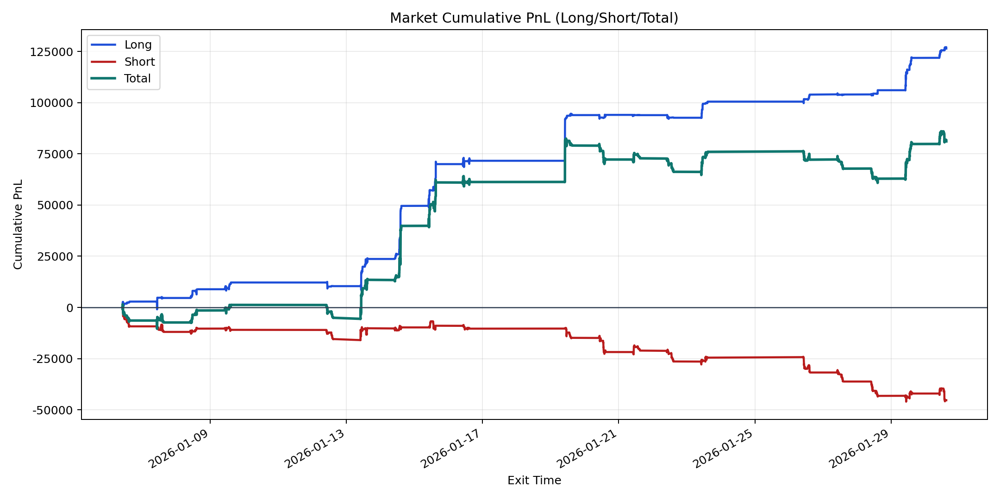
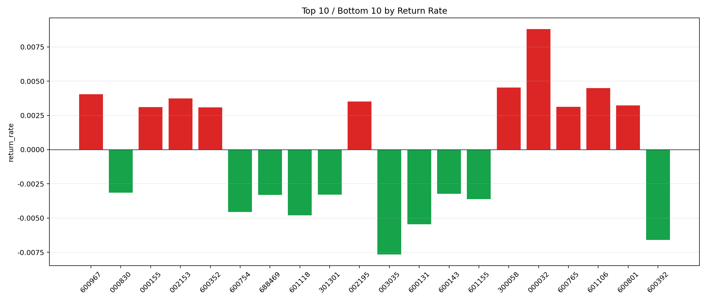

| repo_root | /home/haoranyou/data/output/alpha0.4_1w_5s_3ticks_index_filter/index_weights_500 |
|---|---|
| period_months | 1 |
| period_label | 2026-01-06_to_2026-01-30 |
| start_time | 2026-01-06 10:02:32 |
| end_time | 2026-01-30 15:00:00 |
| n_trades | 12531 |
| n_symbols | 102 |
| total_pnl | 81077.2797000001 |
| long_total_pnl | 126398.52515000022 |
| short_total_pnl | -45321.245450000104 |
| total_entry_notional | 115601081.0 |
| long_entry_notional | 44846159.0 |
| short_entry_notional | 70754922.0 |
| total_return_rate | 0.0007013539925288424 |
| long_return_rate | 0.0028184916605678585 |
| short_return_rate | -0.0006405384130025627 |
| top_symbols_by_return | ["000032", "300058", "601106", "600967", "002153", "002195", "600801", "600765", "000155", "600352"] |
| bottom_symbols_by_return | ["003035", "600392", "600131", "601118", "600754", "601155", "688469", "301301", "600143", "000830"] |

